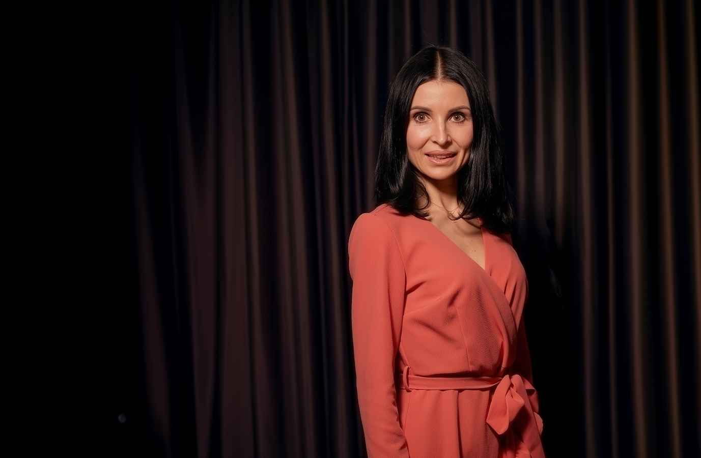

Exit
Prodej firmy, generační obměnaKonflikt
Spory společníků, rozpad partnerstvíOchrana
Osobní situace s maximální diskrétnostíRozhodnutí
Průsečík práva, byznysu a osobní situace
Rozumím právu, byznysu i lidem
Vybudovala jsem a prodala vlastní advokátní kancelář. Prošla jsem tím, čím procházejí moji klienti — exit, restrukturalizace, nové začátky. Vím, jaké to je stát před rozhodnutím, které změní všechno.
JUDr. Alice Hejzlarová, LL.M., MBA
Tým na míru
Pokud situace vyžaduje širší tým, spolupracuji s pečlivě vybranou sítí špičkových odborníků. Nejde o klasické poradenské týmy. Jsou to stejně orientovaní private counsels ve svých oborech — lidé, kteří pracují vysoce diskrétně, osobně a na nejvyšší úrovni.
Jak přemýšlí
private counsel
Poslechněte si, jak přistupuji k situacím, které řešíte.
Kdy potřebujete private counsel — a kdy stačí AK
Rozdíl mezi advokátem a člověkem, který zná celý váš příběh
Exit firmy: co vám nikdo neřekne, než podepíšete
Emoce, timing a chyby, které vidím u každého druhého exitu
Rozvod podnikatele: proč to není jen rodinné právo
Když se rozpadá rodina i firma zároveň — a proč potřebujete jednoho člověka
Diskrétnost není NDA — je to DNA
Proč omezený počet mandátů a žádný tým chrání víc než jakýkoliv papír
První schůzka: co od ní čekat — a co od vás čekám já
Jak vypadá začátek spolupráce, která může trvat roky
Jsem tady, když
budete připraveni
Řeknete mi, co řešíte — a já vám řeknu, jestli a jak mohu pomoct. Nezávazně a zcela diskrétně.
Napište mi